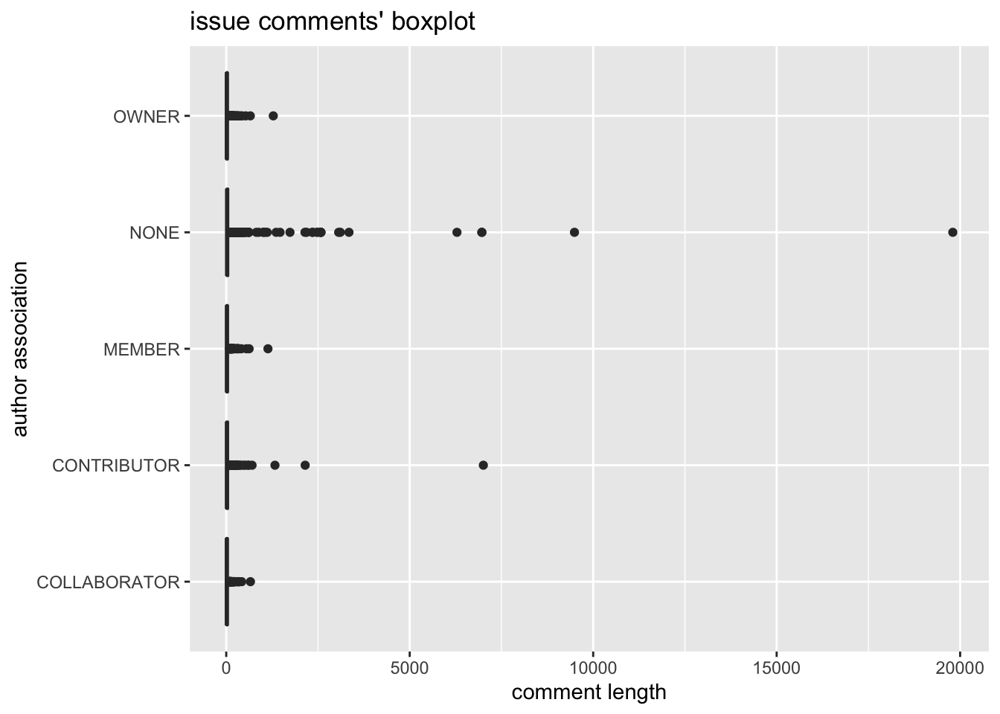
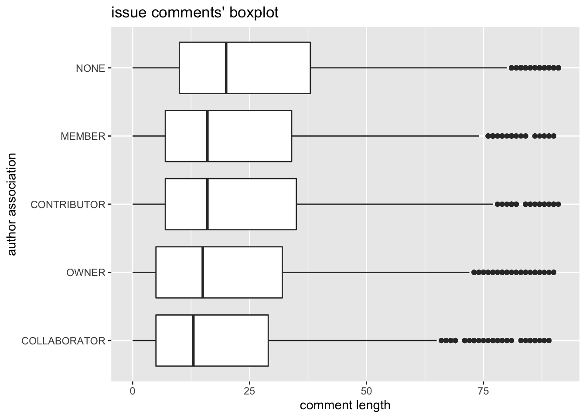
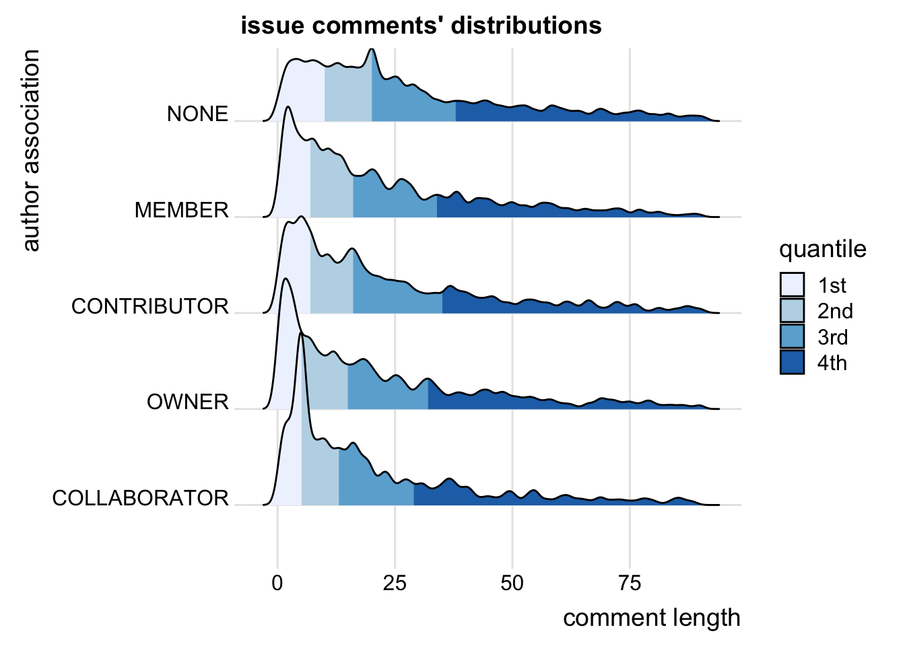
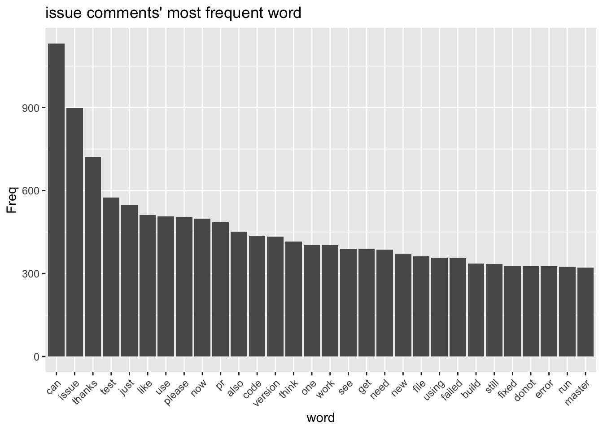
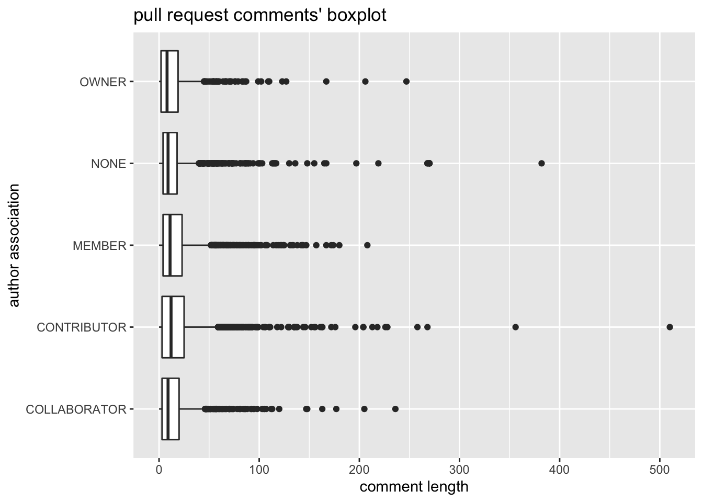
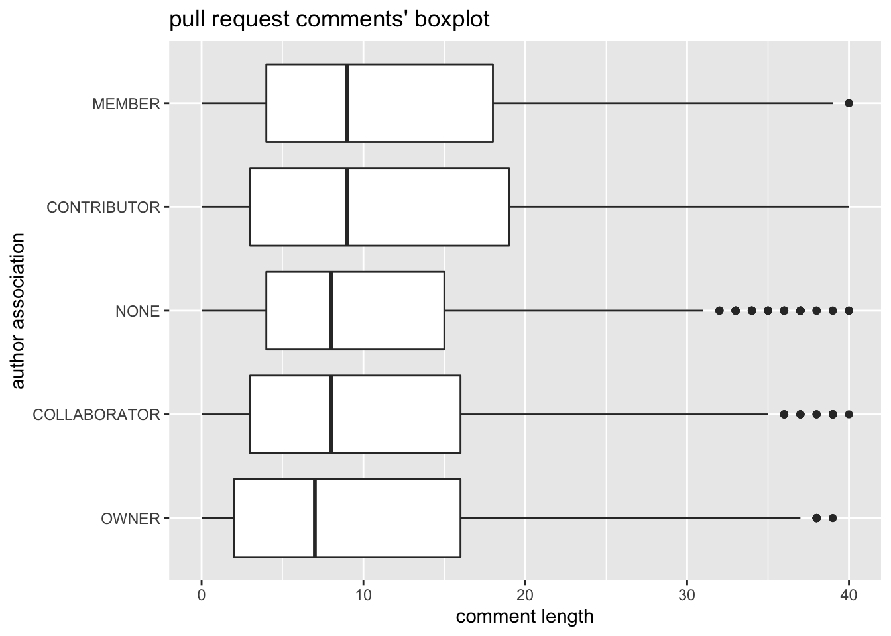
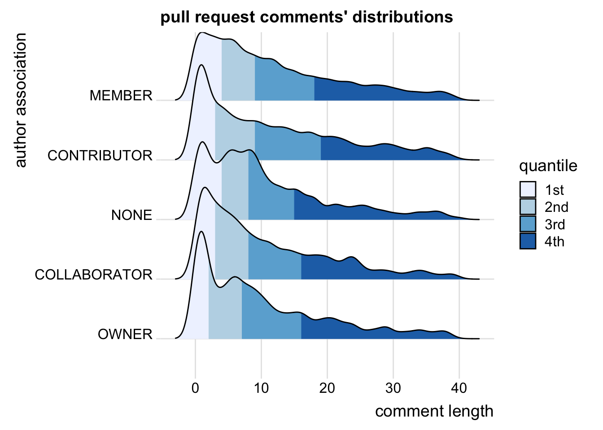
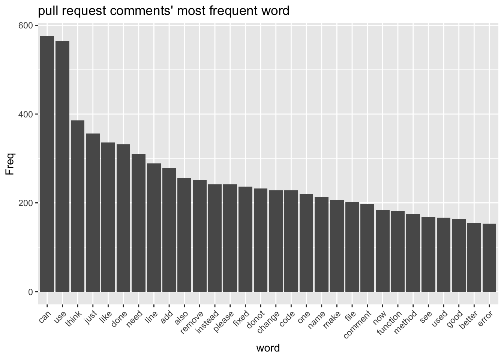
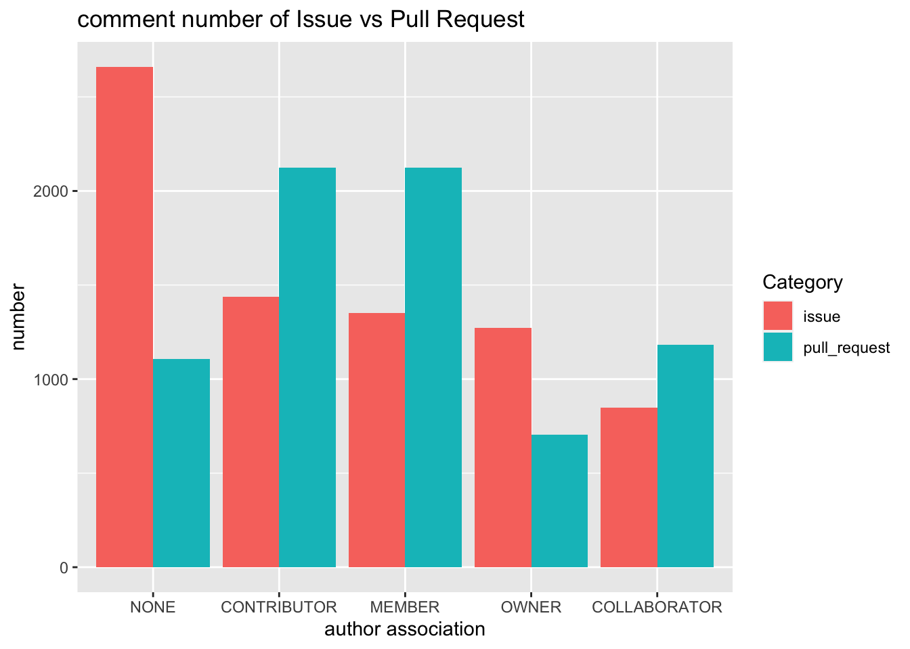

Chapter 5 Results
library(tidyverse)
library(stringi)
library(stopwords)
library(lubridate)
library(qdapRegex)
library(ggridges)
library(ggpubr)# function used to clean commit messages and issue/pull request comments
clean_string <- function(string){
string <- gsub("'t", "ot", string) # change 't to not, e.g., don't -> donot
string <- gsub("'[a-z]+? ", " ", string) # remove 's, 'll and similar
string <- rm_url(string) # remove url
string <- gsub("[[:punct:]\n\r]", " ", string) # remove punctuation
string <- gsub(" [0-9]+", " ", string) # remove numbers
string <- gsub("\\s+", " ", string) # remove all extra white space
return(string %>% tolower() %>% trimws())
}5.1 issue comments
issue<-read_csv("resources/data/issue_comments.csv")
# remove those whose comments is not written in English
issue<-issue %>%
mutate(encoding_comment=stri_enc_mark(body))
issue <- issue %>%
filter(encoding_comment=="ASCII") %>%
select(-encoding_comment)
# clean the body column and split it into a list of word
issue <- issue %>%
mutate(comment_string=sapply(body, clean_string)) %>%
mutate(comment_split=strsplit(comment_string, " ")) %>%
mutate(comment_length=sapply(comment_split, length))First, let try to see if there is any relationship between user’s association with the repo and the length of their posted issue comments. Yet, we can see that there are a lot of outliers, which makes the box plot impossible to analysis.
issue %>%
select(author_association, comment_length) %>%
ggplot(aes(x = author_association, y = comment_length)) +
geom_boxplot() +
coord_flip() +
labs(x = "author association", y = "comment length", title = "issue comments' boxplot") Therefore, we decided to first remove the longest 10% comments and redraw the box plot. Now we can clearly see, after removing the longest 10% comments, that the distribution is still left skew and that “NONE” users (users who does not have any association with the repo) tend to leave longer “issue” comments.
# remove the longest 10% comment
issue_comment_len_first_90_perc <- issue %>%
arrange(comment_length) %>%
mutate(rank = row_number(comment_length)) %>%
filter(rank < 0.90 * nrow(issue)) %>%
mutate(author_association = fct_reorder(author_association, comment_length))
issue_comment_len_first_90_perc %>%
select(author_association, comment_length) %>%
ggplot(aes(x = author_association, y = comment_length)) +
geom_boxplot() +
coord_flip() +
labs(x = "author association", y = "comment length", title = "issue comments' boxplot")
By further inspecting the distribution of each category, we can see that the peak of “OWNER” is to the left of all other categories and that the peak of “COLLABORATOR” is a lot higher than other categories and also to the right of other categories except “NONE”. We may guess that “OWNER” tend to leave shorter and “COLLABORATOR” tend to leave longer comments than others.
Also the distribution support our observation from previous plot that “NONE” tend to (or rather with higher probability to) leave longer issue comments than others, and it makes sense since users who do not involve in the development of the project tend to have problems and/or questions.
issue_comment_len_first_90_perc %>%
select(author_association, comment_length) %>%
ggplot(aes(x = comment_length, y = author_association, fill = stat(quantile))) +
stat_density_ridges(quantile_lines = FALSE, calc_ecdf = TRUE, bandwidth = 1,
geom = "density_ridges_gradient") +
scale_fill_brewer(name = "quantile", labels = c("1st", "2nd", "3rd", "4th")) +
labs(x = "comment length", y = "author association", title = "issue comments' distributions") +
theme_ridges()
Next, we would like to see the most common word people use in their comments. Not surprisingly, words like “issue”, “test”, “code”, “problem”, “error”, which are related to codings, comes top of the list. And we can also see github users are very polite since words like “can”, “please”, and “thanks” also appears very frequently.
issue_split<- issue_comment_len_first_90_perc %>%
select(comment_split) %>%
unnest(comment_split) %>%
group_by(comment_split) %>%
count(name = "Freq") %>%
filter(! comment_split %in% stopwords("en", source = "snowball")) %>%
arrange(desc(Freq))
issue_split %>%
head(30) %>%
ggplot(aes(x = fct_reorder(comment_split, Freq, .desc=TRUE), y = Freq)) +
geom_bar(stat='identity') +
theme(axis.text.x = element_text(angle = 45, hjust=1)) +
labs(x = "word", title = "issue comments' most frequent word")
5.2 pull request comments
pull<-read_csv("resources/data/pull_request_comments.csv")
# remove those whose comments is not written in English
pull<-pull %>%
mutate(encoding_comment=stri_enc_mark(body))
pull <- pull %>%
filter(encoding_comment=="ASCII") %>%
select(-encoding_comment)
# clean the body column and split it into a list of word
pull <- pull %>%
mutate(comment_string=sapply(body, clean_string2)) %>%
mutate(comment_split=strsplit(comment_string, " ")) %>%
mutate(comment_length=sapply(comment_split, length))Similarly, for pull request comments, there also are a large amount of outliers, although not that extreme compared to issue comments, but still the outliers make the box plot harder to analysis.
pull %>%
select(author_association, comment_length) %>%
ggplot(aes(x = author_association, y = comment_length)) +
geom_boxplot() +
coord_flip() +
labs(x = "author association", y = "comment length", title = "pull request comments' boxplot") So, we remove the longest 10% comments, and we can see this time, “NONE” users no longer tend to leave longer comments, but rather they seems to leave shorter comments than others.
# remove the highest 10% (in terms of length of comments)
pull_comment_len_first_90_perc <- pull %>%
arrange(comment_length) %>%
mutate(rank = row_number(comment_length)) %>%
filter(rank < 0.90 * nrow(pull)) %>%
mutate(author_association = fct_reorder(author_association, comment_length))
pull_comment_len_first_90_perc %>%
select(author_association, comment_length) %>%
ggplot(aes(x = author_association, y = comment_length)) +
geom_boxplot() +
coord_flip() +
labs(x = "author association", y = "comment length", title = "pull request comments' boxplot")
But by examining the ridgeline plot, the peak of “NONE” is still to right of other categories, especially compared to “CONTRIBUTOR” and “OWNER”. We may infer that “OWNER” and “CONTRIBUTOR” leaves shorter message than others with higher probability, yet the difference is only within a few words
pull_comment_len_first_90_perc %>%
select(author_association, comment_length) %>%
ggplot(aes(x = comment_length, y = author_association, fill = stat(quantile))) +
stat_density_ridges(quantile_lines = FALSE, calc_ecdf = TRUE, bandwidth = 1,
geom = "density_ridges_gradient") +
scale_fill_brewer(name = "quantile", labels = c("1st", "2nd", "3rd", "4th")) +
labs(x = "comment length", y = "author association", title = "pull request comments' distributions") +
theme_ridges()
Similarly, we still can see polite words like “can”, “please”, and code-related words like “code”, “function”, “method” “file”, “comment” and “error” comes top of the list. But we also can see words like “add”, “remove”, “fixed”, “good”, and “better”, which is related to pull requests since pull request is all about modifying codes to make it better.
pull_split<- pull_comment_len_first_90_perc %>% select(comment_split) %>%
unnest(comment_split) %>%
group_by(comment_split) %>%
count(name = "Freq") %>%
filter(! comment_split %in% stopwords("en", source = "snowball")) %>%
arrange(desc(Freq))
pull_split %>%
head(30) %>%
ggplot(aes(x = fct_reorder(comment_split, Freq, .desc=TRUE), y = Freq)) +
geom_histogram(stat='identity') +
theme(axis.text.x = element_text(angle = 45, hjust=1)) +
labs(x = "word", title = "pull request comments' most frequent word") ## Comparison between Issue and Pull Request
Intuitively, the composition of users leaving issue comments should be relatively different from the composition of users leaving pull request comments. And it indeed is the case. We can see that “NONE” users leaves twice as many comments as others but only half as many comments as “CONTRIBUTOR” and “MEMBER” users. Surprisingly, “OWNER” user leaves the fewest number of pull request comments.
pull_comment_len_first_90_perc %>%
select(author_association, comment_length) %>%
group_by(author_association) %>%
summarise(pull_request = n()) %>%
inner_join(
issue_comment_len_first_90_perc %>%
select(author_association, comment_length) %>%
group_by(author_association) %>%
summarise(issue = n())
) %>%
mutate(author_association = fct_reorder(author_association, issue, .desc = TRUE)) %>%
pivot_longer(cols = -author_association, names_to = "Category") %>%
ggplot(aes(x = author_association, y = value, fill = Category)) +
geom_bar(stat = "identity", position = "dodge") +
labs(x = "author association", y = "number", title = "comment number of Issue vs Pull Request")